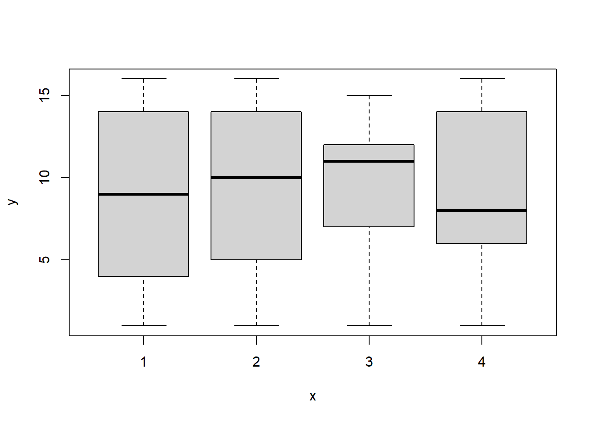
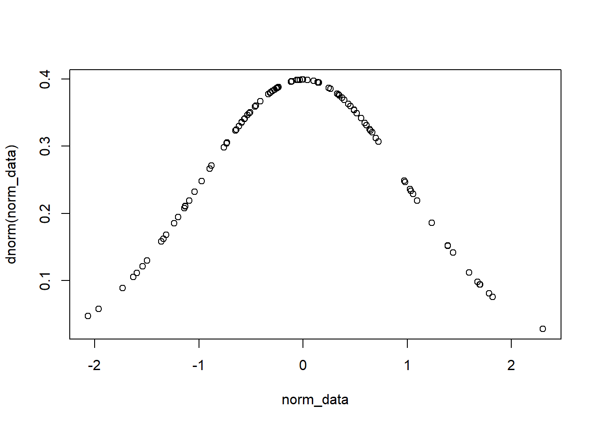
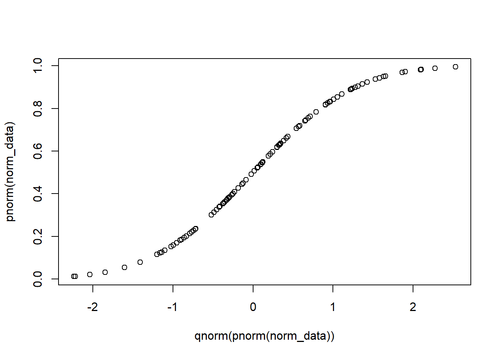

基礎 R 語法寫作示範
學員姓名
下載這份檔案並以Rstudio開啟，按下編輯視窗上方的
Knit按鈕，生成網頁檔有最佳瀏覽效果。
講義範例來自R基本實作秘訣速查表，部分參考Rstudio視覺介面以及Rmarkdown秘訣速查表。請參考youtube的可重製統計示範系列，學習講義的每道範例。
這份講義介紹的語法及技巧涵蓋Psyteachr課程的Level 1: Data Skills全書以及Fundamentals of Quantitative Analysis的第1至第8單元，提供修習”研究生學習模組”與”高年級大學生學習模組”的學員搭配學習。
預先載入套件
一份Rmarkdown文件經常使用非內建套件(package)的函式(function)與資料，為了能在文件內正常使用這些套件的函式，建議方式是在R markdown的第一個chunk載入。這段文字之後的setup chunk，渲染後(Knit)不會在輸出文件顯示chunk內的程式碼，你可以從源始Rmarkdown檔檢視安裝及載入套件的程式碼。
使用內建套件
載入內建資料：“iris”是經典生物統計資料集，常用於各式統計方法及程式測試。資料集介紹請見維基百科條目：安德森鳶尾花卉數據集。
data(iris)
head(iris)## Sepal.Length Sepal.Width Petal.Length Petal.Width Species
## 1 5.1 3.5 1.4 0.2 setosa
## 2 4.9 3.0 1.4 0.2 setosa
## 3 4.7 3.2 1.3 0.2 setosa
## 4 4.6 3.1 1.5 0.2 setosa
## 5 5.0 3.6 1.4 0.2 setosa
## 6 5.4 3.9 1.7 0.4 setosairis 資料有五個變項。
查詢使用說明
在console視窗輸入以下任何查詢指令，可開啟函式或套件的說明文件。
?mean ## 取得函式的說明文件
help.search('weightedmean') ## 以關鍵詞查詢有weightedmean函式的套件說明文件
help(package ='dplyr') ## 關鍵詞查詢說明文件查詢資料物件性質
資料與函式在R環境通稱”物件”(Objects)，物件有兩種性質：形態(class)與資料結構(structure)。R環境設資料物件形態有數值(value)、向量(vector)、矩陣(matrix)、資料框架(data frame)、以及列表(List)。每種型態都有指定的資料結構，依照資料結構建立的資料物件，才能輸入函式，執行計算、資料整頓等工作。
class(iris) ## 顯示物件型態## [1] "data.frame"str(iris) ## 顯示物作型態與資料結果## 'data.frame': 150 obs. of 5 variables:
## $ Sepal.Length: num 5.1 4.9 4.7 4.6 5 5.4 4.6 5 4.4 4.9 ...
## $ Sepal.Width : num 3.5 3 3.2 3.1 3.6 3.9 3.4 3.4 2.9 3.1 ...
## $ Petal.Length: num 1.4 1.4 1.3 1.5 1.4 1.7 1.4 1.5 1.4 1.5 ...
## $ Petal.Width : num 0.2 0.2 0.2 0.2 0.2 0.4 0.3 0.2 0.2 0.1 ...
## $ Species : Factor w/ 3 levels "setosa","versicolor",..: 1 1 1 1 1 1 1 1 1 1 ...工作目錄
- 工作目錄是R環境輸入及輸出檔案的資料夾路徑。有三種方法可確認現在的工作目錄。
- 在console視窗執行
getwd()。 - 在Rstudio切換Files視窗，點擊右上角Rstudio logo。

- 在Rmarkdown文件內編輯的程式碼，工作目錄是文件存檔的資料夾路徑。
- 若非必要，不建議更改工作目錄。若要更改可使用
setwd()設定其他資料夾路徑。
存取資料
資料檔可存放於工作目錄之外的資料夾路徑，未處理的資料建議以csv格式存檔。
讀取資料檔
如果要使用之前儲存的映像檔(RData)，建議在文件第一個chunk setup執行匯入load()。
讀取前確認資料檔第一列(row)為欄位標題，才能獲得如範例的執行效果。 以五大人格測驗資料為例：
# 讀取格式化分欄的純文字檔
big5_01 <- read.table(file = "https://scgeeker.github.io/Reproducible_STAT/data/5factor.txt", header = TRUE)
head(big5_01)## subj_id O C E A N
## 1 S01 4.428571 4.5 3.333333 5.142857 1.625
## 2 S02 5.714286 2.9 3.222222 3.000000 2.625
## 3 S03 5.142857 2.8 6.000000 3.571429 2.500
## 4 S04 3.142857 5.2 1.333333 1.571429 3.125
## 5 S05 5.428571 4.4 2.444444 4.714286 1.625
## 6 S06 4.428571 2.2 3.111111 4.571429 4.000# 讀取逗號分欄的純文字檔
big5_02 <- read.csv(file = "https://scgeeker.github.io/Reproducible_STAT/data/5factor.csv")
head(big5_02)## subj_id O C E A N
## 1 S01 4.428571 4.5 3.333333 5.142857 1.625
## 2 S02 5.714286 2.9 3.222222 3.000000 2.625
## 3 S03 5.142857 2.8 6.000000 3.571429 2.500
## 4 S04 3.142857 5.2 1.333333 1.571429 3.125
## 5 S05 5.428571 4.4 2.444444 4.714286 1.625
## 6 S06 4.428571 2.2 3.111111 4.571429 4.000寫入資料檔
存放資料檔格式以有分欄的純文字檔優先考慮，有其他格式或需儲存檔案太多，再考慮以映像檔(RData)儲存。
## 建議增加參數row.names = FALSE
## 寫入格式化分欄的純文字檔
write.table(head(big5_01), file = "big5_head.txt",row.names = FALSE)
## 寫入逗號分欄的純文字檔
write.csv(head(big5_02), file = "big5_head.csv",row.names = FALSE)檢視及建立物件
- 執行大量程式碼將在R環境記憶體留存物件，改寫程式碼過程經常要檢視已存物件。檢視物件有兩種方法。
- 在console視窗執行
ls()，列印已存物件名稱。 - 在Rstudio切換Environment視窗，查看已存物件清單。
- 移除已存物件的方法：
- 移除指定物件：在console視窗，或程式碼腳本，執行
rm(x)(x代表任何已存物件)。 - 移除全部物件：在console視窗，或程式碼腳本，執行
rm(list = ls())。 - 在Rstudio主選單選擇”Session -> Restart R and Clear Output”，清除所有已存物件及已載入套件。

- 建立物件：使用指派運算子
<-指派物件內容。R自動判斷運算子右方的資料結構，賦予物件型態。
## 指派數值
a <- "apple"
## 建立函式
square <- function(x){
squared = x*x
return(squared)
}
## 檢視函式執行效果
square(7)## [1] 49向量
定義:一維資料結構~只用一套數值/向量索引資料內數值的結構。
建立向量的各種方法：
x1 <- c(2,4,6) #直接列出數值
x2 <- 2:6 #製造連續數值
x3 <- seq(2, 3, by = 0.5) #製造連續數值
x4 <- rep(1:2, times=3) #製造重覆數值
names(x2) <- c("apple","banana","orange","lemon","papaja") #為數值命名向量運算函式
資料表內一個欄位就是一個向量，內建運算函式能檢視向量內數值狀態：
sort(x4) # 回傳排序的數值 ## [1] 1 1 1 2 2 2rev(x4) # 顛倒數值順序 ## [1] 2 1 2 1 2 1table(x4) # 表列數值次數## x4
## 1 2
## 3 3unique(x4) # 查看數值種類## [1] 1 2索引向量內數值
資料處理與運算經常要由向量內取出部分數值，善用索引技巧能事半功倍。
- 位置索引
x2[4] # 第四位數值## lemon
## 5x2[-4] # 第四位之外的數值## apple banana orange papaja
## 2 3 4 6x2[2:4] # 第二到第四位數值## banana orange lemon
## 3 4 5x2[-(2:4)] # 第二到第四位之外的數值## apple papaja
## 2 6x2[c(1,5)] # 第一位和第五位數值## apple papaja
## 2 6- 數值索引
x3[x3==3] # 等於3的數值## [1] 3x3[which(x3==3)] # 等於3的數值## [1] 3x3[x3<3] # 小於3的數值## [1] 2.0 2.5x3[x3 %in% c(1,2,5)] # 符合集合{1, 2, 5}的數值## [1] 2- 命名索引
x2['apple'] # 命名是'apple'的數值## apple
## 2向量的物件型態
向量的型態可以是邏輯值(logical), 整數或浮點數(numeric), 字符或字串(character), 以及因子(factor)。型態之間能用as.函式系列互相轉換，初次建立物件的R判斷順序是”logical -> numeric -> character -> factor”。
as.logical() |
TRUE, FALSE, TRUE | |
as.numeric() |
1, 0, 1 | |
as.character() |
1, 0, 1 | 測試console內執行 |
as.factor() |
1, 0, 1 | 測試console內執行 |
迴圈與迭代
比對數值
廻圈與函式需要透過”比對”，設定執行程式碼的條件：
| 功能 | 程式碼範例 |
|---|---|
| 等於 | a==b |
| 不等於 | a!=b |
| 大於 | a>b |
| 小於 | a<b |
| 大於或等於 | a>=b |
| 小於或等於 | a<=b |
| 等於 NA | is.na(a) |
| 等於 null | is.null(a) |
只要兩項物件資料結構相同，都能比對！
- 善用迴圈與迭代，能簡化需要多次執行的程式碼。
for
x <- 1:4
for (i in x) {
j <- i + 10
print(j)
}## [1] 11
## [1] 12
## [1] 13
## [1] 14while
i <- 2
while (i < 5) {
print(i)
i <- i + 1
}## [1] 2
## [1] 3
## [1] 4if-else
i <- 2
if (i > 3) {
print('Yes')
} else {
print('No')
}## [1] "No"function
square <- function(x){
squared = x*x
return(squared)
}
square(7)## [1] 49square(13)## [1] 169- for, while, if-else 需要在執行前先建立物件
- function在建立物件前要完成
二維以上的資料結構
定義：需要使用兩套數值/向量索引資料內數值的結構。
矩陣
以對角矩陣做範例:
m <- matrix(c(1:3,c(2,1,6),c(3,6,1)),nc=3)
m## [,1] [,2] [,3]
## [1,] 1 2 3
## [2,] 2 1 6
## [3,] 3 6 1n <- 0:2
n## [1] 0 1 2索引矩陣內數值
m[2,] ## 取得第2列數值## [1] 2 1 6m[,1] ## 取得第1欄數值## [1] 1 2 3m[2,3] ## 取得第 2 列第 3 欄數值## [1] 6矩陣運算
t(m) ## 轉置矩陣## [,1] [,2] [,3]
## [1,] 1 2 3
## [2,] 2 1 6
## [3,] 3 6 1m %*% n ## 矩陣內積## [,1]
## [1,] 8
## [2,] 13
## [3,] 8solve(m,n) ## 解聯立方程式, m必須是對角矩陣## [1] 1.4166667 -0.3333333 -0.2500000字串
定義：由兩個以上字符組合的資料。例如姓名~ John, Rebeca
字串可以是向量數值，例如問卷選項。依處理需要，經常會合併、分割或取代字串內容。
x <- c("Donald", "Trump")
y <- c("Joe","Biden")
paste(x,y,sep = "")## [1] "DonaldJoe" "TrumpBiden"paste(x, collapse ='')## [1] "DonaldTrump"grep(pattern="D", x)## [1] 1toupper(x)## [1] "DONALD" "TRUMP"tolower(x)## [1] "donald" "trump"nchar(x)## [1] 6 5資料框架
定義: 包含至少一筆數值數量相同的向量
df <- data.frame(x = 1:10, y = letters[1:10])
df$x ## 索引x欄位數值## [1] 1 2 3 4 5 6 7 8 9 10df[[2]] ## 索引第2欄數值## [1] "a" "b" "c" "d" "e" "f" "g" "h" "i" "j"df[,2] ## 索引第2欄數值## [1] "a" "b" "c" "d" "e" "f" "g" "h" "i" "j"df[2,] ## 索引第2列數值## x y
## 2 2 bdf[2,2] ## 索引第2欄,第2列數值## [1] "b"head(df) ## 列印首6列數值## x y
## 1 1 a
## 2 2 b
## 3 3 c
## 4 4 d
## 5 5 e
## 6 6 ftail(df)## x y
## 5 5 e
## 6 6 f
## 7 7 g
## 8 8 h
## 9 9 i
## 10 10 j有需要時，資料框架能依欄或依列合併其他物件。
z <- runif(10) ## 製造新欄位資料
d <- c(11,letters[11],runif(1)) ## 製造新列資料
df = cbind(df,z)
df## x y z
## 1 1 a 0.62106562
## 2 2 b 0.27527438
## 3 3 c 0.06028045
## 4 4 d 0.00236066
## 5 5 e 0.77148894
## 6 6 f 0.25827041
## 7 7 g 0.95547380
## 8 8 h 0.91641872
## 9 9 i 0.46932779
## 10 10 j 0.69871766df = rbind(df,d)
df## x y z
## 1 1 a 0.621065617538989
## 2 2 b 0.275274384999648
## 3 3 c 0.0602804461959749
## 4 4 d 0.00236066011711955
## 5 5 e 0.771488944068551
## 6 6 f 0.258270406164229
## 7 7 g 0.955473798559979
## 8 8 h 0.916418720269576
## 9 9 i 0.469327789265662
## 10 10 j 0.698717659106478
## 11 11 k 0.433247548062354因子
定義: 索引資料框架的欄位，統計函式必須使用因子分組資料。
x<-rep(1:4,each=25)
factor(x) ## 將向量轉換成因子，設定層次(levels)及層次順序## [1] 1 1 1 1 1 1 1 1 1 1 1 1 1 1 1 1 1 1 1 1 1 1 1 1 1 2 2 2 2 2 2 2 2 2 2 2 2 2 2 2 2
## [42] 2 2 2 2 2 2 2 2 2 3 3 3 3 3 3 3 3 3 3 3 3 3 3 3 3 3 3 3 3 3 3 3 3 3 4 4 4 4 4 4 4
## [83] 4 4 4 4 4 4 4 4 4 4 4 4 4 4 4 4 4 4
## Levels: 1 2 3 4x<-1:100
cut(x,4) ## 指定切割區間數，將向量轉換成因子## [1] (0.901,25.8] (0.901,25.8] (0.901,25.8] (0.901,25.8] (0.901,25.8] (0.901,25.8]
## [7] (0.901,25.8] (0.901,25.8] (0.901,25.8] (0.901,25.8] (0.901,25.8] (0.901,25.8]
## [13] (0.901,25.8] (0.901,25.8] (0.901,25.8] (0.901,25.8] (0.901,25.8] (0.901,25.8]
## [19] (0.901,25.8] (0.901,25.8] (0.901,25.8] (0.901,25.8] (0.901,25.8] (0.901,25.8]
## [25] (0.901,25.8] (25.8,50.5] (25.8,50.5] (25.8,50.5] (25.8,50.5] (25.8,50.5]
## [31] (25.8,50.5] (25.8,50.5] (25.8,50.5] (25.8,50.5] (25.8,50.5] (25.8,50.5]
## [37] (25.8,50.5] (25.8,50.5] (25.8,50.5] (25.8,50.5] (25.8,50.5] (25.8,50.5]
## [43] (25.8,50.5] (25.8,50.5] (25.8,50.5] (25.8,50.5] (25.8,50.5] (25.8,50.5]
## [49] (25.8,50.5] (25.8,50.5] (50.5,75.2] (50.5,75.2] (50.5,75.2] (50.5,75.2]
## [55] (50.5,75.2] (50.5,75.2] (50.5,75.2] (50.5,75.2] (50.5,75.2] (50.5,75.2]
## [61] (50.5,75.2] (50.5,75.2] (50.5,75.2] (50.5,75.2] (50.5,75.2] (50.5,75.2]
## [67] (50.5,75.2] (50.5,75.2] (50.5,75.2] (50.5,75.2] (50.5,75.2] (50.5,75.2]
## [73] (50.5,75.2] (50.5,75.2] (50.5,75.2] (75.2,100] (75.2,100] (75.2,100]
## [79] (75.2,100] (75.2,100] (75.2,100] (75.2,100] (75.2,100] (75.2,100]
## [85] (75.2,100] (75.2,100] (75.2,100] (75.2,100] (75.2,100] (75.2,100]
## [91] (75.2,100] (75.2,100] (75.2,100] (75.2,100] (75.2,100] (75.2,100]
## [97] (75.2,100] (75.2,100] (75.2,100] (75.2,100]
## Levels: (0.901,25.8] (25.8,50.5] (50.5,75.2] (75.2,100]df <- data.frame(y = sample(1:16,size = 100,replace = TRUE), x = as.factor(rep(1:4,each=25)) )
plot(y ~ x,data=df)
列表
定義: 集合型態及數量不一致的資料
l<-list(x= 1:5,
y= c('a','b'),
z= df)
l[[2]] ## 取得第二個物件數值 ## [1] "a" "b"l[3] ## 取得列表第三個物件名稱與數值## $z
## y x
## 1 12 1
## 2 15 1
## 3 6 1
## 4 8 1
## 5 2 1
## 6 16 1
## 7 3 1
## 8 6 1
## 9 6 1
## 10 5 1
## 11 7 1
## 12 5 1
## 13 14 1
## 14 16 1
## 15 13 1
## 16 9 1
## 17 13 1
## 18 16 1
## 19 8 1
## 20 5 1
## 21 8 1
## 22 8 1
## 23 10 1
## 24 10 1
## 25 5 1
## 26 7 2
## 27 6 2
## 28 12 2
## 29 12 2
## 30 12 2
## 31 4 2
## 32 16 2
## 33 7 2
## 34 10 2
## 35 12 2
## 36 6 2
## 37 1 2
## 38 2 2
## 39 14 2
## 40 10 2
## 41 9 2
## 42 10 2
## 43 9 2
## 44 16 2
## 45 4 2
## 46 7 2
## 47 1 2
## 48 15 2
## 49 7 2
## 50 11 2
## 51 5 3
## 52 3 3
## 53 11 3
## 54 16 3
## 55 6 3
## 56 3 3
## 57 12 3
## 58 7 3
## 59 7 3
## 60 16 3
## 61 2 3
## 62 11 3
## 63 13 3
## 64 5 3
## 65 11 3
## 66 9 3
## 67 6 3
## 68 3 3
## 69 4 3
## 70 3 3
## 71 9 3
## 72 5 3
## 73 13 3
## 74 15 3
## 75 16 3
## 76 9 4
## 77 7 4
## 78 10 4
## 79 13 4
## 80 2 4
## 81 14 4
## 82 4 4
## 83 1 4
## 84 10 4
## 85 14 4
## 86 2 4
## 87 4 4
## 88 7 4
## 89 9 4
## 90 14 4
## 91 9 4
## 92 9 4
## 93 4 4
## 94 8 4
## 95 14 4
## 96 4 4
## 97 8 4
## 98 15 4
## 99 8 4
## 100 8 4l$x ## 取得列表x物件數值## [1] 1 2 3 4 5l['z'] ## 取得列表z物件名稱與數值## $z
## y x
## 1 12 1
## 2 15 1
## 3 6 1
## 4 8 1
## 5 2 1
## 6 16 1
## 7 3 1
## 8 6 1
## 9 6 1
## 10 5 1
## 11 7 1
## 12 5 1
## 13 14 1
## 14 16 1
## 15 13 1
## 16 9 1
## 17 13 1
## 18 16 1
## 19 8 1
## 20 5 1
## 21 8 1
## 22 8 1
## 23 10 1
## 24 10 1
## 25 5 1
## 26 7 2
## 27 6 2
## 28 12 2
## 29 12 2
## 30 12 2
## 31 4 2
## 32 16 2
## 33 7 2
## 34 10 2
## 35 12 2
## 36 6 2
## 37 1 2
## 38 2 2
## 39 14 2
## 40 10 2
## 41 9 2
## 42 10 2
## 43 9 2
## 44 16 2
## 45 4 2
## 46 7 2
## 47 1 2
## 48 15 2
## 49 7 2
## 50 11 2
## 51 5 3
## 52 3 3
## 53 11 3
## 54 16 3
## 55 6 3
## 56 3 3
## 57 12 3
## 58 7 3
## 59 7 3
## 60 16 3
## 61 2 3
## 62 11 3
## 63 13 3
## 64 5 3
## 65 11 3
## 66 9 3
## 67 6 3
## 68 3 3
## 69 4 3
## 70 3 3
## 71 9 3
## 72 5 3
## 73 13 3
## 74 15 3
## 75 16 3
## 76 9 4
## 77 7 4
## 78 10 4
## 79 13 4
## 80 2 4
## 81 14 4
## 82 4 4
## 83 1 4
## 84 10 4
## 85 14 4
## 86 2 4
## 87 4 4
## 88 7 4
## 89 9 4
## 90 14 4
## 91 9 4
## 92 9 4
## 93 4 4
## 94 8 4
## 95 14 4
## 96 4 4
## 97 8 4
## 98 15 4
## 99 8 4
## 100 8 4常用內建函式
數學運算函式
有至少一個欄位的資料，使用數學運算函式能做簡單統計。
x <- runif(10)
y <- rnorm(10)
log(x) ##自然對數 ## [1] -0.3566000 -4.0721797 -0.0120860 -0.6579778 -0.6154751 -2.4411421 -1.1079870
## [8] -1.6395847 -0.5904822 -1.3458387exp(x) ##自然指數 ## [1] 2.013858 1.017186 2.685822 1.678495 1.716666 1.090964 1.391278 1.214170 1.740304
## [10] 1.297347max(x) ##最大值## [1] 0.9879867min(x) ##最小值## [1] 0.01704021round(exp(x), 2) ##顯示數值到小數點第2位## [1] 2.01 1.02 2.69 1.68 1.72 1.09 1.39 1.21 1.74 1.30signif(log(x), 3) ##小數點第3位起簡寫數值## [1] -0.3570 -4.0700 -0.0121 -0.6580 -0.6150 -2.4400 -1.1100 -1.6400 -0.5900 -1.3500quantile(x) ##百分位數## 0% 25% 50% 75% 100%
## 0.01704021 0.21062579 0.42406029 0.55064106 0.98798674rank(x) ##次序位數## [1] 9 1 10 6 7 2 5 3 8 4sum(x) ##總和 ## [1] 4.189087mean(x) ##平均## [1] 0.4189087median(x) ##中位數## [1] 0.4240603var(x) ##樣本變異數## [1] 0.08898948sd(x) ##樣本標準差## [1] 0.298311cor(x,y) ##相關## [1] 0.2866583統計函式
預設內建統計函式已經涵蓋基礎統計方法
prop.test(x,seq(10,100,by=10)) ## 分組平均比例顯著性考驗##
## 10-sample test for equality of proportions without continuity correction
##
## data: x out of seq(10, 100, by = 10)
## X-squared = 9.055, df = 9, p-value = 0.4322
## alternative hypothesis: two.sided
## sample estimates:
## prop 1 prop 2 prop 3 prop 4 prop 5 prop 6
## 0.0700052430 0.0008520103 0.0329328915 0.0129474386 0.0108076817 0.0014510226
## prop 7 prop 8 prop 9 prop 10
## 0.0047174719 0.0024257578 0.0061562228 0.0026032129t.test(x,y) ## 獨立分組平均數 t檢定##
## Welch Two Sample t-test
##
## data: x and y
## t = 1.4605, df = 9.9424, p-value = 0.175
## alternative hypothesis: true difference in means is not equal to 0
## 95 percent confidence interval:
## -0.3249729 1.5586955
## sample estimates:
## mean of x mean of y
## 0.4189087 -0.1979526group <- factor(rep(c("a","b","c"),c(3,3,4) ))
pairwise.t.test(x,group) ## 計算t檢定的相依樣本變數相關性##
## Pairwise comparisons using t tests with pooled SD
##
## data: x and group
##
## a b
## b 1 -
## c 1 1
##
## P value adjustment method: holmaov.1 <- aov(x~group) ## 變異數分析
lm.1 <- lm(x~group) ## 線性模型
glm.1 <- glm(x~group) ## 通用線性模型
summary(glm.1) ## 簡報變異數分析, 線性模型, 通用線性模型##
## Call:
## glm(formula = x ~ group)
##
## Deviance Residuals:
## Min 1Q Median 3Q Max
## -0.55132 -0.12404 0.06362 0.15298 0.41963
##
## Coefficients:
## Estimate Std. Error t value Pr(>|t|)
## (Intercept) 0.5684 0.1828 3.110 0.0171 *
## groupb -0.1866 0.2585 -0.722 0.4938
## groupc -0.2337 0.2418 -0.967 0.3659
## ---
## Signif. codes: 0 '***' 0.001 '**' 0.01 '*' 0.05 '.' 0.1 ' ' 1
##
## (Dispersion parameter for gaussian family taken to be 0.1001965)
##
## Null deviance: 0.80091 on 9 degrees of freedom
## Residual deviance: 0.70138 on 7 degrees of freedom
## AIC: 9.8058
##
## Number of Fisher Scoring iterations: 2機率分佈函式
使用機率分佈函式製造符合假設的模擬資料，預覽研究設計的合理性與可執行程度。
##常態分佈
norm_data <- rnorm(100) ## 製造隨機變數
pnorm(norm_data) ## 累積機率函數## [1] 0.28754076 0.51614055 0.11533270 0.37583920 0.38349006 0.40143092 0.47628619
## [8] 0.96567948 0.94428996 0.05153122 0.67601850 0.45322326 0.74175540 0.96301778
## [15] 0.16488902 0.84967152 0.14891826 0.48065028 0.49897130 0.95508592 0.69676354
## [22] 0.40384524 0.55540165 0.29709372 0.34106681 0.13690275 0.95300104 0.12681372
## [29] 0.64534788 0.83637305 0.05534070 0.27754352 0.39241178 0.96278304 0.92483937
## [36] 0.04174737 0.06161664 0.30321702 0.72873428 0.40755533 0.48750375 0.28616043
## [43] 0.72894913 0.60388962 0.26053929 0.68763193 0.12883879 0.08994129 0.23105025
## [50] 0.91773425 0.72893962 0.98931135 0.66760656 0.45555464 0.39783952 0.32569874
## [57] 0.37810967 0.54017187 0.56014245 0.22310352 0.84732184 0.08689220 0.23248027
## [64] 0.25874549 0.91740830 0.75789148 0.63282327 0.10781929 0.85427624 0.68732155
## [71] 0.72324944 0.09457459 0.18474871 0.63689684 0.55673876 0.06701235 0.49556891
## [78] 0.38406212 0.95531925 0.12941438 0.27819926 0.73847311 0.26919075 0.36865233
## [85] 0.30523545 0.59740102 0.18992323 0.89153665 0.01943938 0.65372474 0.74605095
## [92] 0.08678619 0.32290318 0.71112333 0.83466173 0.76578626 0.02494195 0.45756485
## [99] 0.62893673 0.86306539dnorm(norm_data) ## 機率密度函數## [1] 0.34093432 0.39861573 0.19450152 0.37946172 0.38180569 0.38670240 0.39823728
## [8] 0.07603590 0.11237431 0.10564300 0.35945096 0.39619680 0.32323113 0.08083662
## [15] 0.24812486 0.23349899 0.23203512 0.39847293 0.39894095 0.09464108 0.34937478
## [22] 0.38729759 0.39508922 0.34615639 0.36684880 0.21920904 0.09815499 0.20793198
## [29] 0.37216239 0.24689169 0.11178577 0.33518263 0.38434543 0.08125573 0.14178656
## [36] 0.08921535 0.12162558 0.34936476 0.33141875 0.38818290 0.39874655 0.34015773
## [43] 0.33128784 0.38533751 0.32471172 0.35395979 0.21023394 0.16231191 0.30442224
## [50] 0.15183262 0.33129364 0.02824545 0.36319372 0.39646393 0.38578914 0.36023095
## [57] 0.38017336 0.39691799 0.39440027 0.29847388 0.23591919 0.15819383 0.30547051
## [64] 0.32355571 0.15228534 0.31235531 0.37662156 0.18534816 0.22868727 0.35411148
## [71] 0.33471373 0.16846039 0.26670409 0.37521717 0.39490067 0.12982515 0.39891767
## [78] 0.38197477 0.09424500 0.21088466 0.33556898 0.32534394 0.33014861 0.37711940
## [85] 0.35039877 0.38699224 0.27129787 0.18614452 0.04726350 0.36894503 0.32041569
## [92] 0.15804961 0.35895699 0.34168059 0.24856228 0.30673226 0.05833126 0.39668325
## [99] 0.37792039 0.21924390qnorm(pnorm(norm_data)) ## 量數 = 隨機變數## [1] -0.560583466 0.040469404 -1.198646559 -0.316427038 -0.296327317 -0.249645075
## [7] -0.059476759 1.820775216 1.591842552 -1.630184815 0.456593859 -0.117521862
## [13] 0.648766664 1.786833312 -0.974561070 1.035025612 -1.041084075 -0.048521599
## [19] -0.002578582 1.696304860 0.515114633 -0.243406549 0.139320735 -0.532777760
## [25] -0.409553368 -1.094340868 1.674675512 -1.141582878 0.372790668 0.979660147
## [31] -1.595137881 -0.590154545 -0.273038569 1.783936888 1.438397663 -1.730759143
## [37] -1.541343206 -0.515170270 0.608989436 -0.233838112 -0.031328566 -0.564636764
## [43] 0.609637844 0.263427925 -0.641683702 0.489149114 -1.131897376 -1.341116626
## [49] -0.735392492 1.389991373 0.609609127 2.301253694 0.433313708 -0.111639468
## [55] -0.258943221 -0.451821633 -0.310449267 0.100866732 0.151330380 -0.761753650
## [61] 1.025014559 -1.360143903 -0.730703081 -0.647217814 1.387847769 0.699536127
## [67] 0.339340215 -1.238209003 1.054951486 0.488272421 0.592521945 -1.313100219
## [73] -0.897415172 0.350176405 0.142705869 -1.498417946 -0.011107318 -0.294829359
## [79] 1.698775434 -1.129163742 -0.588199313 0.638645196 -0.615262323 -0.335424810
## [85] -0.509401403 0.246625646 -0.878179244 1.234741564 -2.065467703 0.395396196
## [91] 0.662114110 -1.360814276 -0.459595822 0.556669387 0.972752070 0.725040011
## [97] -1.960958254 -0.106570521 0.329038554 1.094195537比照以上的示範，自由測試秘訣速查表列出的其他機率函式：卜瓦松分佈,二項分佈,均勻分佈。
繪圖函式
有上百筆資料時，視覺化是理解資料的最佳方式
plot(dnorm(norm_data)~norm_data) ## 視覺化機率密度函數
plot(pnorm(norm_data)~qnorm(pnorm(norm_data))) ## 視覺化累積機率函數
比照以上的示範，嘗試視覺化秘訣速查表列出的其他機率函式：卜瓦松分佈,二項分佈,均勻分佈。